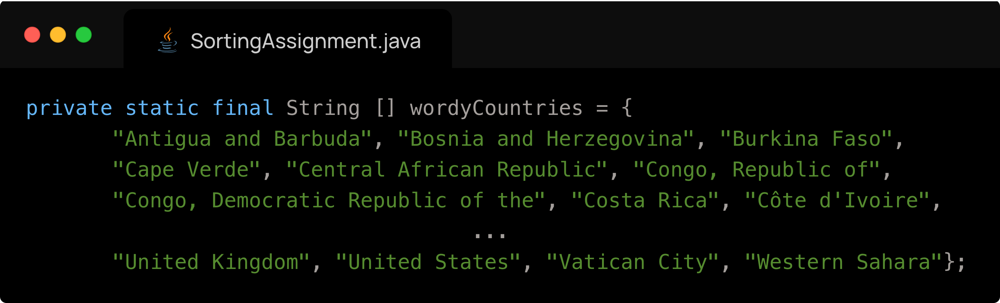
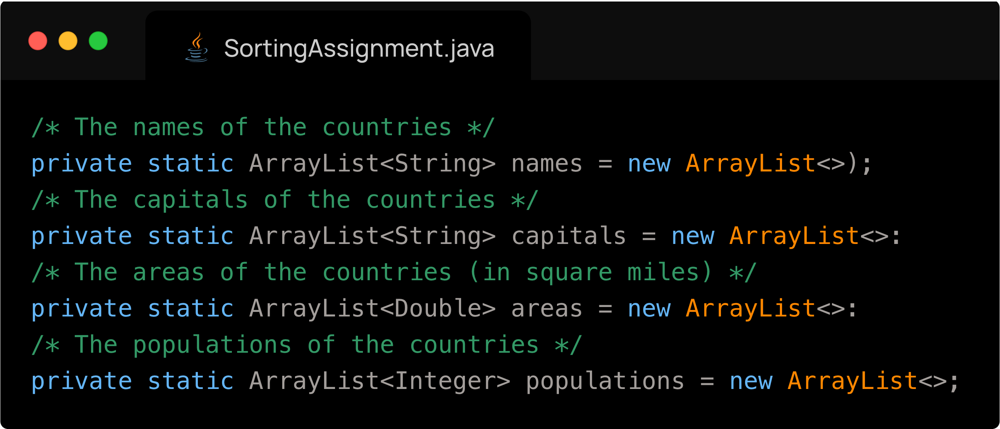
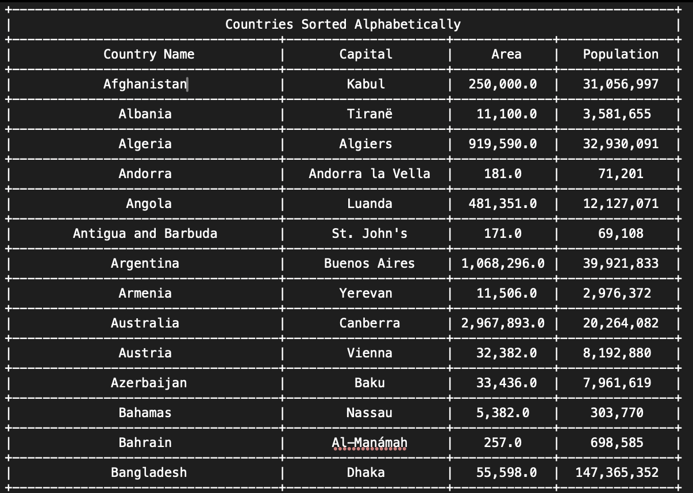
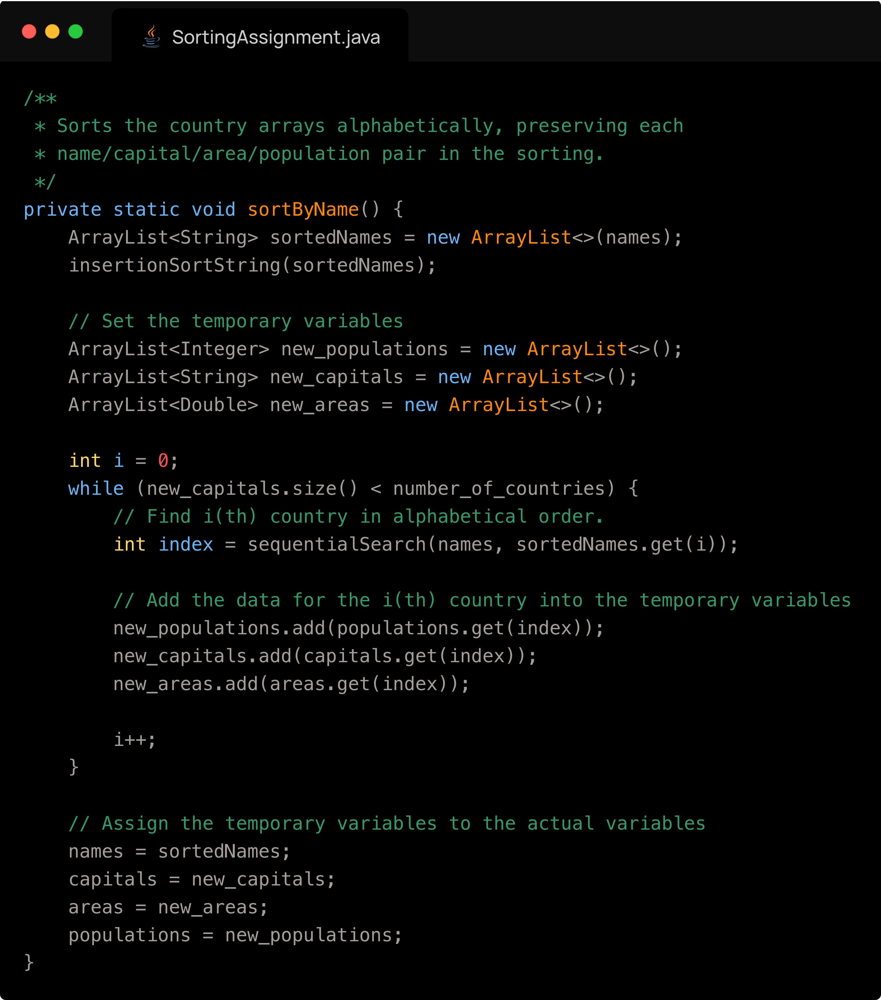

Primitive types
Big O Notation
Time and space complexity are denoted in big O notation. Big O notation describes the performance of an algorithm as a function of the input size (n), taking only the largest term. If we have an O(n²), we understand that the performance will worsen quadratically with an increasing input size.
Below is a simple table explaining the practical meaning behind several common time complexities:
| Time Complexity | Description | Example Algorithm |
|---|---|---|
| O(1) | Constant time | Accessing array element |
| O(log n) | Logarithmic | Binary Search |
| O(n) | Linear | Sequential Search |
| O(n log n) | Efficient Sorting | Merge Sort, Quick Sort |
| O(n²) | Inefficient Sorting | Bubble Sort, Insertion Sort |
Big O Notation Tutorial - A Guide to Big O Analysis | GeeksforGeeks
Image from: ggorantala.dev
In the image above, we see how a large value of n can quickly make unoptimized algorithms very slow.
Searching
Searching is the process of locating an element in an array based on its value.
The two searching algorithms discussed are: sequential search and binary search.
Sequential (Linear) Search
- Checks each element one-by-one.
- Works on unsorted data.
- Time Complexity: O(n)
- Simple but slow on large datasets.
Linear Search Algorithm | GeeksforGeeks
Binary Search
- Repeatedly divides a sorted array in half.
- Much faster but needs sorted input.
- Time Complexity: O(log n)
Binary Search Algorithm - Iterative and Recursive Implementation | GeeksforGeeks
Sorting
Searching is the process of ordering an Array in some order. A common example is sorting integers from least to greatest.
If we have an array {3.14, 6.02, 10.5, 1.0} and we run a sorting algorithm on our array, it will become {1.0, 3.14, 6.02, 10.5}. There are countless sorting algorithms which can all complete such a task, however, they have some notable differences - notably efficiency (performance). We have two main benchmarks when it comes to efficiency in algorithms: time complexity and space complexity.
Here are various sorting algorithms and a brief description of how they work:
1. Bubble Sort
- Repeatedly swaps adjacent elements if they're in the wrong order.
- Time Complexity: O(n²)
- Space Complexity: O(1) (in-place In-Place Algorithm | GeeksforGeeks)
- Very slow for large datasets.
Bubble Sort Algorithm | GeeksforGeeks
2. Selection Sort
- Selects the smallest element and moves it to the correct position.
- Time Complexity: O(n²)
- Space Complexity: O(1) (in-place)
Selection Sort Algorithm | GeeksforGeeks
3. Insertion Sort
- Builds the sorted array one item at a time by inserting elements.
- Time Complexity: O(n²)
- Space Complexity: O(1) (in-place)
- Fast on nearly-sorted data.
Insertion Sort Algorithm | GeeksforGeeks
Quicksort
Quicksort is a very efficient divide and conquer sorting algorithm that works by first selecting a pivot element from the array (this selection is very important in the speed of the algorithm), and then partitioning the other elements into two sub-arrays — those less than the pivot and those greater than the pivot. The process is then recursively applied to the resulting sub arrays. This is done until the sub arrays are of size 1 or less, in which case they are sorted (an array of one element is by definition sorted). The key operation is the partitioning, which rearranges elements so that the pivot ends up in its final sorted position (we used Lomuto's Partitioning technique in our presentation). Unlike Merge Sort, Quicksort usually doesn't require extra space because it sorts in place, making its space complexity O(log n) due to the recursion stack. It is worth noting that this figure can be misleading, because storing the recursion stack takes much less space than the array itself. In the average case, Quicksort runs in O(n log n) time, making it very fast for large datasets. However, its worst-case time complexity is O(n²), which happens when the pivot divides the array very unevenly (e.g., if the smallest or largest element is always chosen as pivot and the data is exactly sorted or unsorted). This can be avoided by using a good pivot strategy like choosing the median of 3 (first, last and middle values), the Pseudomedian of 9 (the median of the median of the first third, the second third and third third of the array) or a random element (very good for it's simplicity). Using one of these pivoting techniques, the possibility for a O(n2) ‘slowdown' is mathematically impossible for large datasets, as the probability of choosing a bad pivot a significant number of times for large values of n is zero. Quicksort is therefore widely used because of its excellent average-case performance and low memory overhead.
Below is an implementation of Quicksort:
Quick Sort Algorithm | GeeksforGeeks
Comparison of Sorting Algorithms
| Algorithm | Time Complexity | Space Complexity |
|---|---|---|
| Bubble Sort | O(n²) | O(1) |
| Selection Sort | O(n²) | O(1) |
| Insertion Sort | O(n²) (best: O(n)) | O(1) |
| Quick Sort | O(n log n) (worst: O(n²)) | O(log n) |
| Merge Sort | O(n log n) | O(n) |
| Binary Search | O(log n) | O(1) iterative / O(log n) recursive |
| Linear Search | O(n) | O(1) |
Sorting Assignment
Sebastian, Joseph and I worked together for the Sorting Assignment. The sorting assignment had us read from a file the names of all the countries, their respective population, area and capital city. We then had to save this data into 4 parallel arrays, and write to a file the countries sorted by (1) alphabetical order and (2) by population.
How we completed each step:
- Reading the data from the file was very difficult because the data in the file was inconsistent, as some countries have spaces in their names or their capitals. Therefore, simply splitting by spaces would not work. We overcame this issue by creating a large array containing all of the countries which are exceptions to the rule of single word country and single word capital.
- You can see a sample of what the data would have looked like below:
Afghanistan Kabul 250,000 31,056,997
Albania Tiranë 11,100 3,581,655
...
Belarus Mensk (Minsk) 80,154 10,293,011 <-this is on of the exceptions
...
Zimbabwe Harare 150,803 12,236,805 -
Below is our array of exceptions

- This was a very difficult step because of its tedious nature.
- You can see a sample of what the data would have looked like below:
The process of saving the data into four parallel Arrays was trivial once we figured out how to read the countries
We now have to sort the countries by name, but preserve the relation between a country’s name, its capital, its area and population. The way I did it is by first copying the array of names and sorting it. I also created three more temporary empty arrays which correspond to the other three attributes of a country. Next, for each name in the copied array of items, I had to find the index of that country in the original names array. Because the four arrays are parallel, this index also corresponds to that country's index in the other arrays. I add to my three temporary arrays the value at the index which I have determined of the original three arrays. From here, I simply overwrite the original arrays with my temporary ones, and the job is complete. What is left is to format the values, and write them to the file. A snippet of the file is below:
The code responsible for my sorting is below:
- The process for sorting the countries in order of population is exactly the same but we create a copy of the populations instead of a copy of the names.